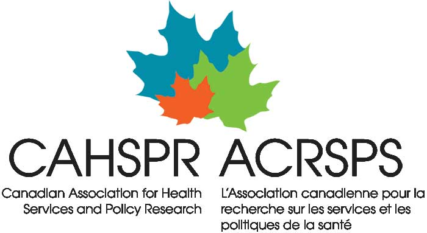

flowchart TD
NoUse([No Use])
IllicitUse([Illicit use])
MixedUse([Mixed use])
PrescriptionUse([Prescription use])
OAT([Opioid Agonist Therapy])
NoUse<-->PrescriptionUse
NoUse<-->IllicitUse
PrescriptionUse<-->IllicitUse
IllicitUse<-->MixedUse
PrescriptionUse<-->MixedUse
NoUse<-->MixedUse
IllicitUse<--> OAT
MixedUse<--> OAT
OAT-->NoUse
OAT-->PrescriptionUse

The Opioid Epidemic
Canada has seen an increasing number of opioid-related harms and deaths, with an estimated 39,435 opioid-related hospitalizations and 40,642 apparent opioid toxicity deaths between January 2016 and June 20231. This is an unprecedented crisis, which the Government of Canada is tackling across a range of fronts2. Policymakers dealing with the opioid crisis, at all levels of government, are faced with difficult questions about the trajectory of the epidemic, as well as questions about which policy interventions would be effective in reducing the number of deaths and overdoses (e.g. decriminalization, provision of safe injection sites, among other policies).
Background & Context
While Statistics Canada, specifically the Health Analysis Division (HAD), has been involved in modelling disease outcomes for many years, previous models have concentrated on a national or provincial picture. Both the COVID-19 pandemic and the opioid crisis have demonstrated that policy making and prevention efforts in smaller geographic areas, for instance Public Health Units (PHUs) or Health Regions (HRs) are essential to target those at risk and prevent adverse outcomes. This project will allow the development of general techniques and models that could be used as tools by local level policymakers to project near-term outcomes and to compare and contrast alternative policy options.
This project will also allow the development of analytical capacity and knowledge in disease modelling at Statistics Canada and externally. The COVID-19 pandemic brought about unprecedented demand for disease modelling knowledge and services within the Federal Government and shed light on a significant gap in modelling capacity and knowledge within the Federal Public Service. Statistics Canada and HAD, in particular, has the opportunity to begin to fill this gap by expanding on the modelling services we provide, including but not limited to, expanding on the types of models we create and support, growing modelling teams that can provide technical and consultation services, and publishing innovative and user-centric visualizations or interfaces for model results. In line with the Statistics Canada Open Science Action plan3, this model code and documentation will be shared externally for use by policymakers and public health practitioners, giving them access to data and innovative tools for decision making.
Approach
The objective of this project is to develop a compartmental agent-based risk model which will simulate the frequency and outcomes of opioid use in a synthetic population, leveraging detailed socio-demographic and other data. The model will include functionality that allows for the application of policies and interventions to model agents in order to determine their impacts in counter-factual or ‘what-if’ scenarios. This functionality allows the model to serve as an analytical tool for policymakers to obtain future projections and compare and contrast policy responses.
The Model
A synthetic population is generated using the socio-demographic profile of the geographic region. The model includes two compartmental layers for its agents, as well a set of events that may occur:
- Opioid use state: the way in which a model agent uses opioids
- Opioid use locations: the location in which they are currently using opioids
- Events: The flow of agents through the previous two compartmental layers, as well as outcomes of opioid use, may be impacted by time-based events. These events can apply to a specific individual or the population as a whole
Compartment transition and opioid use outcome probabilities are governed by risk models, which are parametrized nationally. They are also subject to local multipliers which are derived from specific geographies and populations.
- Housing status
- Hospital
- Prison
- Safe site
- Other
Location of opioid use may impact outcomes of an overdose. Model agents move through these possible locations as if it were a second compartment model.
- Supply contamination
- Injuries
- Social assistance cheques
- Overdoses
Frequency and impact of such events may be local, i.e., dependant on the specific PHU or HR.
Interventions
A key feature of a modeling approach is the ability to study counter-factual scenarios via variable opioid interventions. For example, the model can simulate the effects of:
Open Science
To facilitate access to and use of this model, its development will follow an Open Science approach; this implies transparency and accessibility at all stages of the project allowing for recommendations and criticisms from contributors at any point in the model’s existence. The data used to parameterize the model will come from open Statistics Canada data or publicly available estimates that can serve as model input parameters. These disparate data sources will be assembled and curated for use in the Opioid Policy Model. The model will be written in the open-source programming language Python, with supporting documentation written in markdown files. The use of an open-source language for model development will make it accessible to any user who wishes to use and contribute to the model. Within Python, there are also capacities to create web-based applications from which users can run the model, for example with the Dash package. The proposed model will be made available as standalone set of Python scripts to run in any Integrated Development Environment (IDE), as well as a web-based application which will facilitate the use and customizability of the model for users who do not wish to work within an IDE (e.g., non-technical users). Both the model scripts and documentation will be published internally on the Statistics Canada GitLab server, and externally on the Statistics Canada GitHub server. In these locations, users and collaborators will be able to download the model, make suggestions and share ideas for future model development.
Conclusion
With the help of collaborations with local health authorities and subject matter experts, we have begun development of a tool that can support policy makers and researchers interested in investigating opioid-related harms, while simultaneously being openly available and easy to use. A focus on sub-provincial geographies and adaptability will further ensure that the model remains useful in a variety of scenarios.
This website, as well as the corresponding poster, were made for CAHSPR 2024, using the open-source tool Quarto. The source code for this website can be found here, and the source code for the poster can be found here.
Footnotes
Public Health Agency of Canada: Opioid- and Stimulant-related Harms in Canada↩︎
Government of Canada: Federal actions on the overdose crisis↩︎
Statistics Canada: Open Science Action Plan↩︎